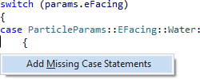

Add Missing Case Statements
Expand a switch statement to include all cases for an enum. Access the feature via the Quick Action and Refactoring menu (Shift+Alt+Q) when inside a switch statement.

Add Missing Case Statements creates cases for all enumerations if a switch statement initially has none.